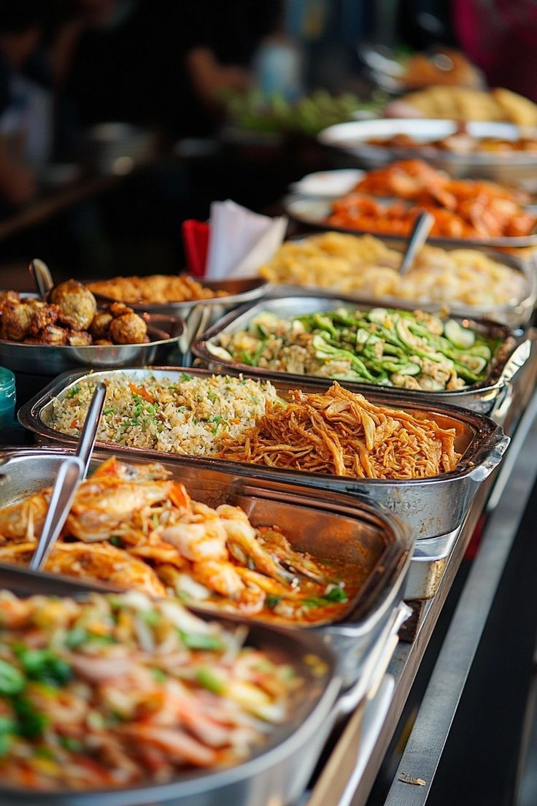

Taste of Nigeria
Explore the rice, soups, grills, and snacks that bring Nigerian families together.
Explore the dishesFood at the heart of Nigerian life
Nigeria is home to more than 250 ethnic groups, and each one brings its own flavors to the table. Meals are shared at weddings, naming ceremonies, festivals, and Sunday family gatherings.
This site introduces five well-loved dishes, the ingredients that give them their taste, and the regions where they are most popular.
Popular dishes
Ingredients and regions
What goes in the pot
Palm oil, scotch bonnet peppers, black-eyed peas, yam, and melon seeds appear again and again in Nigerian kitchens.
Browse the ingredientsWhere each dish comes from
Suya started in the north, while akara and pounded yam are loved across the southwest. Find the signature foods of four regions.
Explore the regions